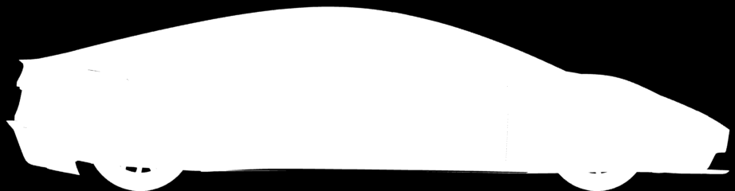

<!doctype html>
<html lang="en">
<head>
<meta charset="utf-8">
<title>Roadster menu bar icon</title>
<link rel="stylesheet" href="roadster.css">
</head>
<body>
<!-- The menu bar icon sheet: three variants large and at natural size on a light and a dark menu bar, the source
     silhouette and the proportions compared. Notes in Russian: the sheet is for Valentin. -->
<div id="root"></div>
<script src="mock.js"></script>
<script>
  const V = [["solid", "A · solid silhouette"], ["wheels", "B · wheels cut out"], ["outline", "C · outline"]];
  const bar = (icon, dark) => `<div class="${dark ? "dark" : ""}">${menubar({ icon, width: 320 })}</div>`;
  document.getElementById("root").innerHTML = `<div class="sheet" id="board" style="width:1100px">
    <div><h2>The menu bar icon: three variants</h2>
      <div class="cap">A macOS template image: a black drawing with transparency that the system itself tints dark or white.
      32 × 18 pt, the car 30 pt. Large: 4.5 times; below: actual size on a light and a dark menu bar.</div></div>
    <div class="variants">${V.map(([k, t]) => `<div class="variant"><h2>${t}</h2>
      <div class="big"><div class="l"></div><div class="d"></div></div>
      <div class="bars">${bar(k, false)}${bar(k, true)}</div></div>`).join("")}</div>
    <div class="compare">
      <div class="src"><h2>Where the silhouette comes from</h2>
        
        <div class="cap">The car's mask on frame 600 of show B (the car stands still). For the icon the small details are gone, the body is smoothed, the wheels are circles in their places.</div></div>
      <div class="pair"><h2>Proportions (variant B)</h2>
        <div class="row"><span>as rendered: height ×1, wheels ×1</span>${bar("wheels-true", false)}</div>
        <div class="row"><span>in the variants: height ×1.35, wheels ×1.1</span>${bar("wheels", false)}</div>
        <div class="row"><span>the same on a dark menu bar</span>${bar("wheels-true", true)}</div>
        <div class="row"><span></span>${bar("wheels", true)}</div>
        <div class="cap" style="max-width:480px">The car is low and long (3.9 : 1). In the menu bar it would be 7.7 pt tall, the wheels hardly seen.
        In all three variants the silhouette is 1.35 times taller and the wheels 1.1 times bigger.</div></div>
    </div></div>`;
</script>
</body>
</html>
